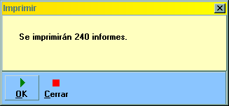
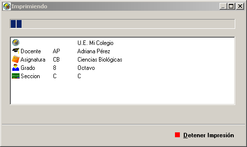
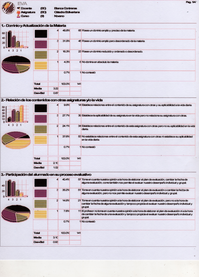

Impresión de Resultados
Al seleccionar un ítem para impresión, el programa presenta una ventana de confirmación que indica el número de informes que serán impresos.

Antes de confirmar la operación, tome en cuenta que cada informe impreso requiere alrededor de cuatro páginas.
Si se confirma la operación de impresión, el programa presenta la ventana de configuración de la impresora. El contenido de esta ventana varía con la versión del sistema operativo y el tipo de impresora.
Una vez configurada la impresora, el programa procede a imprimir los informes a razón de un informe completo por trabajo (job) de impresora.
El programa reporta el progreso de la impresión en una ventana que indica el porcentaje de informes impresos, y el tipo de informe que se está imprimiendo en el momento.

Para detener la impresión, oprima el botón etiquetado con la palabra Detener.
Los informes impresos tienen el mismo formato que los visualizados por pantalla. Cada página de informe contiene los resultados de tantas preguntas como quepan en la página.
